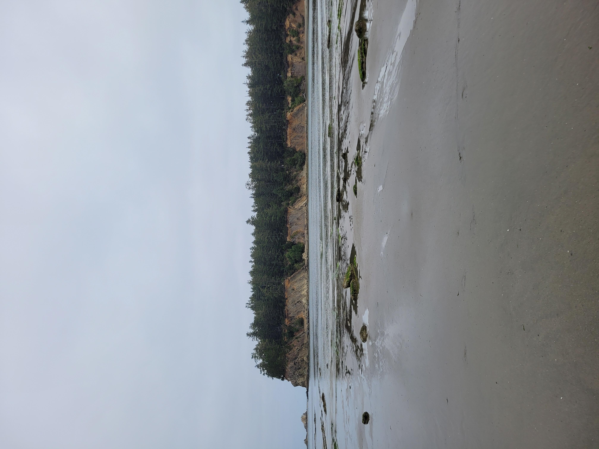

Oregon has 362 miles of public coastlines! You can walk along the sandy or rocky shore and see wonderful sea life at high tide or low tide. There are plenty of opportunities to go wave boarding, surfing, searching for shells and see tide pools. Common in tide pools are sea urchins, star fish and mussels. This beautiful cross stitch is sure to add a splash to your living area!